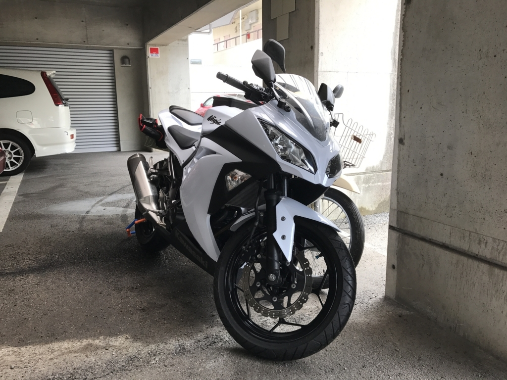
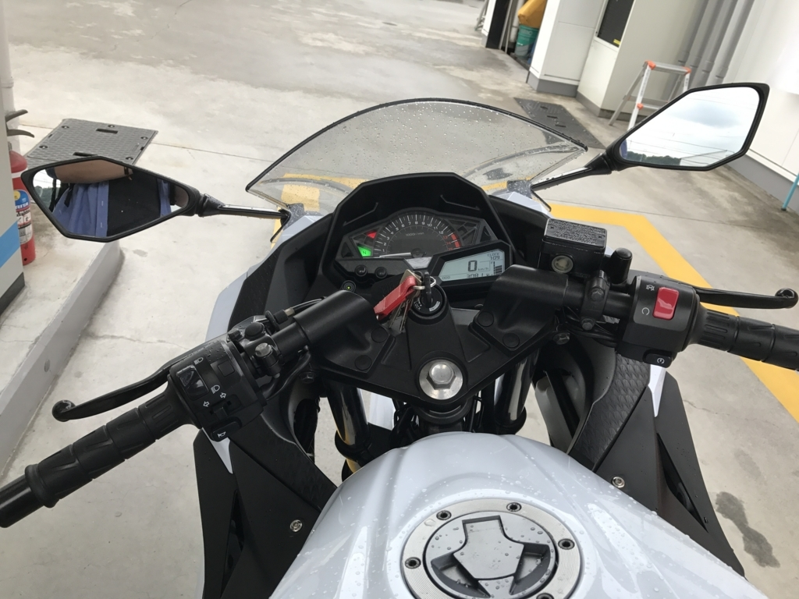
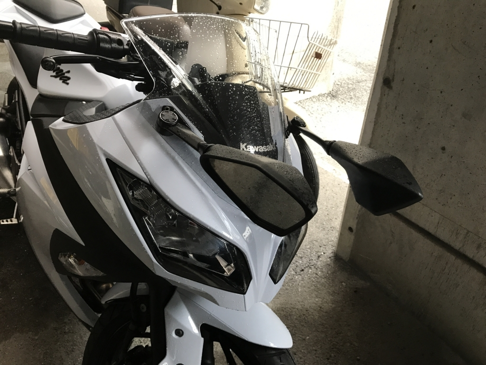
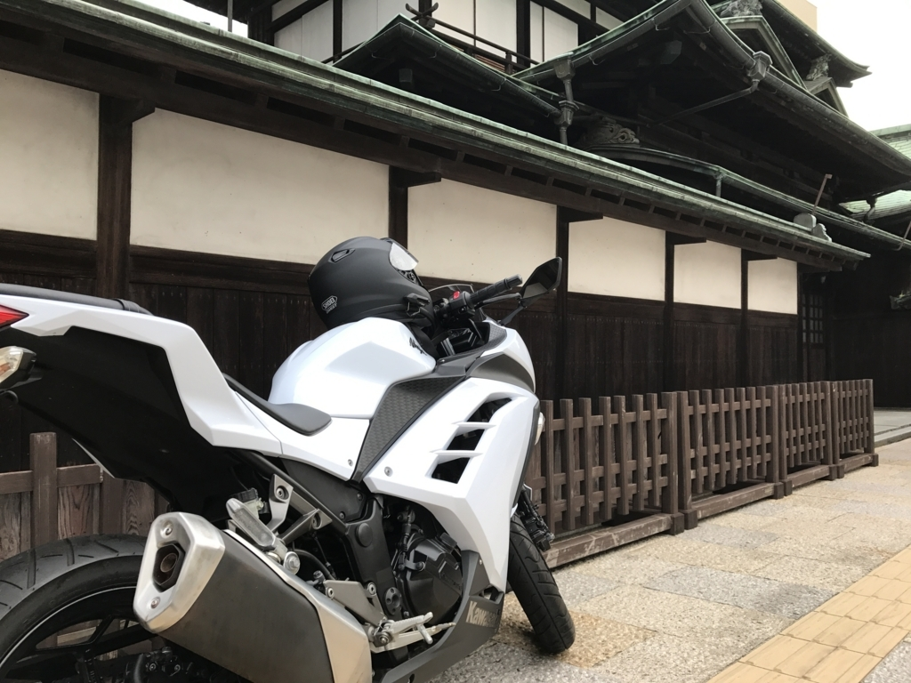
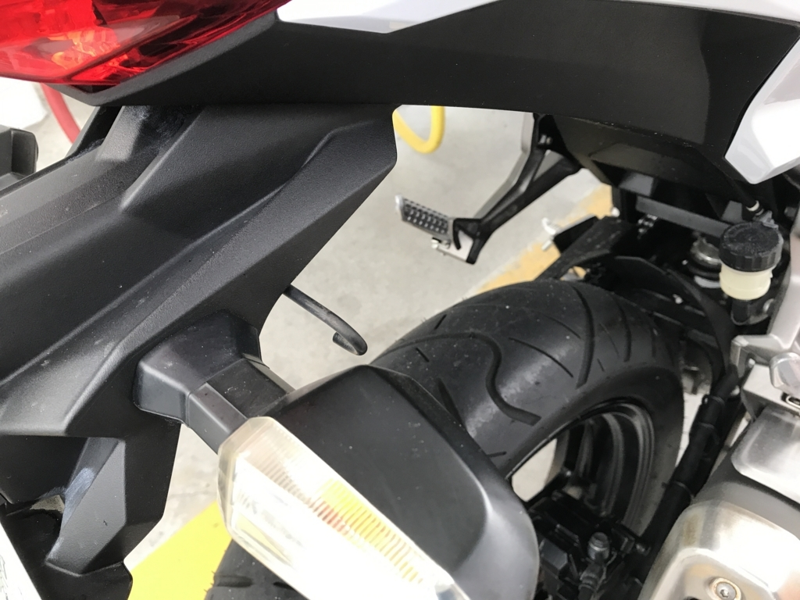
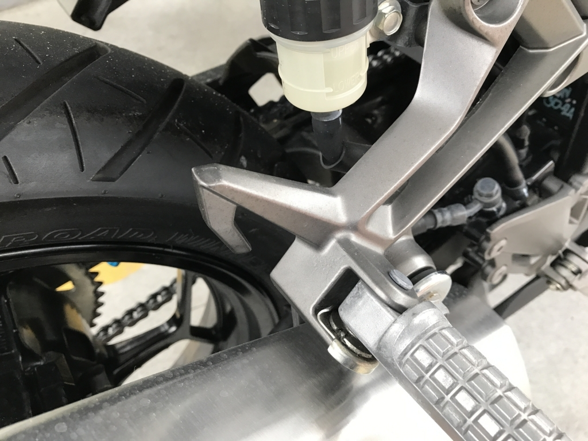

Ninja 250：新しい相棒ができました
公開日：

思うところあって*1、バイクを売ってクルマを買おうかなと思い立ち、レッドバロンに売りに行った。ある意味それが失敗だった。なぜか Kawasaki の Ninja 250 を買っていたからである。
――査定待ちの間、バイクを見ていたら、手ごろそうなのがあったのだから仕方ない。
走行 3000km で 40 万円ぐらい。見た感じ外装もキレイで、新古品って感じだった。だるやなぎ色ではなく白色なのはアレだけど、それはそれでカッコウいいかも。
乗り出しまで諸々おカネがかかるけれど、買取ではなく下取りにしたら少しイロを付けてくれるだろうし*2、250cc だったら維持費安いだろうし、そもそもクルマが必須なわけでなし、買うとも限らないし。あぁ、無駄遣いだなぁ、アラフォーのおっさんが 250cc ってのもなぁと思いつつも、やっぱり足は確保しておきたいなどと考えているうちに、カラダが言うことを聞かんくなった。
納車の日は、あいにくの雨だった。家を出るときは降っていなかったのだけど、レッドバロンまで歩く途中、しとしとと降り出してきて、やがてそこそこの勢いになった。家が近いとはいえ、雨の中、バイクで走るのは億劫だなぁ……などと思っていたのが、いざ乗ってみると、そういう感情は胡散霧消してしまった。
そもそも 25 年落ちのオンボロ Ducati と比べるのが間違っているのだと思うが、ビックリするぐらい乗りやすい。
音は静かで、振動もなく、エンジンはまるでモーターのよう。ハンドルを切ればクルクル曲がる。SS や Monster には慣れていて、下手糞ながら十分に乗りこなしていると思っていたのだけど、あいつらに跨っているとき、自分がいかにさまざまなことに気を遣いながら乗っていたのかを痛感させられた。交差点を曲がるときの体重移動、指先でジーっという音を感じながら握るフロントブレーキ……そういうのがないのはちょっと寂しくあるけれど、フルカウルなのにふんぞり返って、右手でラフに操作しても小気味よく反応してくれるのには感激した。最近の子はデキるなぁ……カワサキでこれって、ホンダになればどんなに優等生なんだろう。

燃料計もあるんだぜ……今まで燃費とオドメーターでガソリンの残量を計算しながら走ってたけど、それからも解放される。前の方にあるミラーも、少しだけ背中を丸めればキッチリ後ろをとらえてくれるし、大変見やすいと思う。ペコっと折りたたんで、パコっと戻せるのも好印象。

ウサギさんの耳が、ウシの角だぜー。
カウルがあるせいか、小排気量なわりに図体がデカい感じだけど、気軽だなーというのが第一印象。パワーはそんなにないし、速いって感じもなかったけれど、今さらかっ飛ばそうなんて言う気もないし、これで十分だなーと思った。

さっそく道後温泉まで朝風呂入りに行ってご機嫌です。
気になる点
スマホホルダーはほしいなー。あと、荷掛フックも増設したい。


タンデムステップの上とフェンダーの下にそれぞれ 1 つずつあった（計 4 つ）けど、タンデムステップの方は少し遠いし、2 × 両サイド程度増設したいかな。晴れてたら来週の倉敷はバイクで行くつもりなので、それまでに何とかできたらいいんだけど。